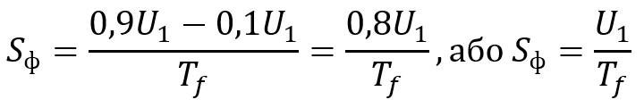
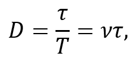

Імпульсний струм
Імпульсний струм – це змінний струм, який подається у вигляді коротких періодичних імпульсів (сплесків), між якими є проміжки часу, коли струм відсутній або дуже малий, і протікає лише в один бік. Окрім стандартних характеристик змінного струму (амплітуди, періоду та частоти), імпульсний струм має декілька додаткових – форма імпульсу, його тривалість та коефіцієнт заповнення.

Рисунок 2.1.1. Види імпульсів
Форма імпульсів може бути найрізноманітнішою: прямокутною, трикутною, трапецієподібною, синусоїдальною, експоненційною тощо (рис 2.1.1). Спостерігати її візуально можна, наприклад, на екрані осцилографа.
В загальному випадку, у формі імпульсу розрізняють такі складові (рис. 2.1.2): передній фронт – початковий підйом від мінімального значення (Tf), вершина – відносно горизонтальна ділянка максимального значення напруги або сили струму, та задній фронт – ділянка зменшення значення з максимального до мінімального (Td).

Рисунок 2.1.2. U0 – мінімальна напруга, U1 – максимальна напруга
Хоча імпульси бувають достатньо різноманітних форм, часто на практиці їх контури бувають нечіткими, що може призвести до серйозних помилок у вимірах та розрахунках. На рисунку 2.1.2 якраз зображений імпульс, наближений до реального. Його початок (передній фронт) є достатньо чітко вираженим, а от спад (задній фронт) є плавним. Тому, задля зменшення похибки, умовно виникли декілька правил поділу форми імпульсу на його складові (рис. 2.1.2):
- Початок та кінець імпульсу фіксуються на рівні 10% від максимального значення напруги (0,1(U1-U0));
- Амплітудою вважається ділянка імпульсу на рівні 90-100% від максимального значення (від 0,9(U1-U0) до U1);
- Передній та задній фронти знаходяться у проміжках зростання та спадання відповідно від рівня 0,1(U1-U0) до рівня від 0,9(U1-U0).
При розгляді імпульсів ідеальної форми (найчастіше теоретичних), які мають чіткі контури, обумовлені правила опускаються і всі виміри виконуються за крайніми точками мінімального та максимального значень.
В деяких галузях достатньо важливою є крутизна фронту Sф – швидкість зростання напруги чи сили струму. Обчислюється за формулою:

де Sф – крутизна фронту, U1 – максимальна напруга, Tf – час зростання напруги (передній фронт). Перша формула – для реальних імпульсів, друга – для ідеальних.
Наступна характеристика імпульсу – його тривалість. Тривалість імпульсу τ – це час, протягом якого тече струм. Існують різні способи вимірювання в залежності від форми імпульсу та очікуваних результатів:
- На рівні 50% від максимального значення напруги – стандартний спосіб вимірювання для багатьох форм імпульсів;
- На рівні 10% від максимального значення напруги – підходить лише для деяких складних форм імпульсів, наприклад, для експоненціальної. Такий вид імпульсу має плавні фронти та довгий хвіст затухання, тому тривалість на рівні 50% може сильно недооцінювати реальний час впливу;
- За основою – спрощений спосіб. Використовується для трикутної, прямокутної, пилкоподібної, синусоїдальної форм, які зазвичай мають достатньо чіткі контури. Також такий спосіб є зручним для навчання, може для наочності застосовуватися у шкільних задачах та демонстраціях.

Рисунок 2.1.3. Імпульсний сигнал з різним коефіцієнтом заповнення D
Коефіцієнт заповнення – безрозмірна величина, яка показує відношення тривалості імпульсу до періоду його повторення. Він коливається від 0 до 1, частіше записують у відсотках. Виходячи з означення, коефіцієнт заповнення описується виразом:

де D – коефіцієнт заповнення, τ – тривалість імпульсу, T – період імпульсу, ν – частота імпульсів.
Існує обернена до коефіцієнту заповнення величина прогальність. Вона є менш зручною, так як коливається від 1 до нескінченності, навпроти коефіцієнту. Але у деяких галузях (наприклад радіолокації) прогальність описує відношення максимальної потужності в імпульсі до середньої потужності джерела і є важливим показником роботи імпульсних радіоелектронних систем.